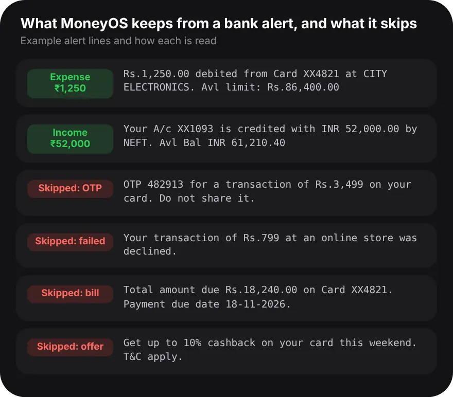

Why add expenses from bank emails?
Because the alert already has the exact amount, merchant and time, so you do not have to type them.
Card payments are the easiest to forget, because nothing reminds you of them until the statement arrives. Most banks and card issuers send an alert for each one, by SMS, by email or both. iPhone apps are not allowed to read your messages, which is why no iPhone expense tracker can read bank SMS. Sharing the alert is the quick, private way around that. You choose the message, and only that text is read, on your iPhone. MoneyOS never connects to your mailbox.
How do I add an expense from a bank email?
In Mail, select the alert, tap Share and choose Add to MoneyOS. Then open MoneyOS, check the row and tap Import. Five steps:
- Open the alert email. In Mail, open the transaction alert your bank or card sent. MoneyOS never reads your mailbox, so you pick each message yourself.
- Select the alert and tap Share. Press on the alert text, drag to select the transaction line, and tap Share. For a statement, press and hold the PDF attachment and tap Share.
- Choose Add to MoneyOS. Tap Add to MoneyOS in the row of apps. The share sheet closes straight away. If you do not see it, tap More at the end of the row and turn it on.
- Open MoneyOS and review. The next time you open MoneyOS, the alert appears on the Review import screen with its amount, merchant and date. Fix anything that looks wrong.
- Tap Import. Nothing is saved until you tap Import. Rows that look like something you already logged are unchecked, so the same alert is not counted twice.
You can share several alerts one after another before opening MoneyOS. They wait in a queue and arrive on the same review screen together.
Can I paste a bank alert instead?
Yes. Copy the alert, then in MoneyOS open Add, tap Paste under Or bring in a batch, paste it and tap Parse.
Pasting suits alerts that are not in Mail, such as a bank SMS or a message in another email app. You can paste several alerts at once; MoneyOS splits them into separate messages. They land on the same Review import screen as a shared email. On iPhones with Apple Intelligence, an on-device model can fill in details the reader missed, but it can never invent an amount or bring back a line that was skipped. For more ways in, see tracking UPI payments without a bank login.
Which bank emails does MoneyOS skip?
OTPs, failed or declined payments, bill due and statement notices, offers and fraud checks are skipped. Only money that actually moved is kept.

An OTP can quote the amount of a payment that has not happened yet, so it is never counted. A declined or reversed payment did not move money. A bill reminder is not new spending, and an offer is not a transaction at all. MoneyOS also removes the available balance and available limit from an alert before it reads the amount, so the number you get is the payment, not what is left in your account. A credit becomes income, and a debit becomes an expense.
Can I share a statement that arrives by email?
Yes. Press and hold the PDF attachment, tap Share and choose Add to MoneyOS. The rows go to review, as with an alert.
A password-protected statement cannot be opened from the share sheet, so it is skipped. For those, save the PDF, then open Add in MoneyOS and tap PDF under Or bring in a batch, which asks for the password. Here is how to import a bank statement PDF. MoneyOS has no account and no server of ours, so shared text and files stay on your iPhone. See the privacy policy.
Frequently asked questions
Can MoneyOS read my bank emails automatically?
No. MoneyOS never connects to your mailbox. You choose each email and share it, or copy and paste it, and only that text is read, on your iPhone.
How do I add an expense from a bank email on iPhone?
In Mail, select the alert text, tap Share and choose Add to MoneyOS. Then open MoneyOS, check the row on the Review import screen and tap Import.
Can I paste a bank alert instead of sharing it?
Yes. Copy the alert, open Add in MoneyOS, tap Paste under Or bring in a batch, paste the text and tap Parse. This works for bank SMS too.
Will an OTP email be added as an expense?
No. OTPs, failed or declined payments, bill due and statement notices, and offers are skipped. Balance and limit amounts are never read as the spend.
Can I share a PDF statement from an email?
Yes. Press and hold the attachment, tap Share and choose Add to MoneyOS, and the rows go to review. A password-protected PDF is skipped, so import it from Add, then PDF, where you can enter the password.
Is MoneyOS free?
Yes. The whole app is free, with no subscription, no ads and no in-app purchases.